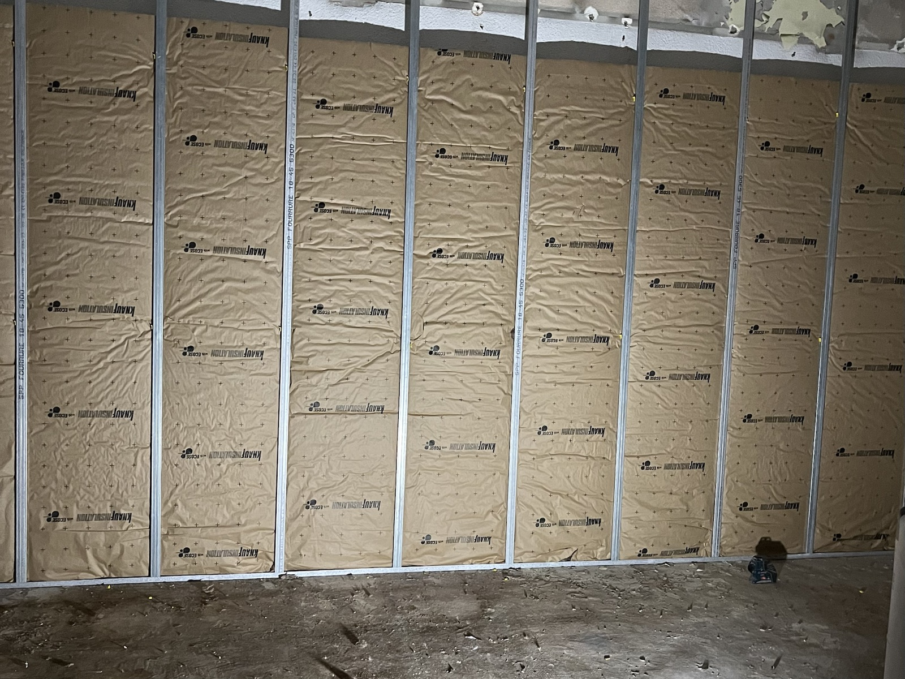

Isolation des murs par l’intérieur
Isolant posé derrière un doublage en plaques de plâtre : murs plus chauds, sensation de paroi froide supprimée.
Isolation · Artisan RGE
Une maison bien isolée, c’est plus de confort hiver comme été et des factures qui baissent. BATIORNE isole vos murs, combles et sols par l’intérieur, avec une qualification RGE qui peut vous ouvrir droit à des aides.
Nos prestations
Isolant posé derrière un doublage en plaques de plâtre : murs plus chauds, sensation de paroi froide supprimée.
Le toit est la première source de pertes de chaleur. Nous isolons vos combles, qu’ils soient habitables ou non.
Isolation sous toiture pour des combles aménagés confortables, été comme hiver.
Cloisons et plafonds isolés pour limiter les bruits entre les pièces et entre les étages.
Fini la sensation de froid aux pieds : nous isolons vos planchers bas.
Une pose continue de l’isolant, avec des raccords soignés, limite les fuites de chaleur aux jonctions.



Questions fréquentes
Le toit et les combles représentent souvent 25 à 30 % des pertes de chaleur d’une maison non isolée (source : ADEME). C’est généralement la priorité, avant les murs et les sols.
La qualification RGE est exigée pour bénéficier de la plupart des aides publiques à la rénovation énergétique, comme MaPrimeRénov’ ou les CEE.
Oui, de quelques centimètres sur les murs isolés, selon l’épaisseur de l’isolant choisie. Nous vous conseillons le meilleur compromis entre performance et surface habitable.
Oui. Nous venons voir votre maison, puis nous vous remettons un devis détaillé, gratuit et sans engagement.
Zone d’intervention
Nous intervenons à Flers, Saint-Georges-des-Groseillers, Messei, La Lande-Patry, Briouze et les communes voisines de l’Orne.
Nos autres services : Plaquiste à Flers · Faux plafond à Flers · Rénovation intérieure à Flers
Visite sur place et devis gratuit, sans engagement.